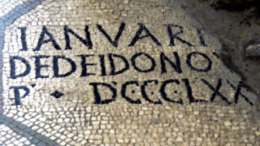
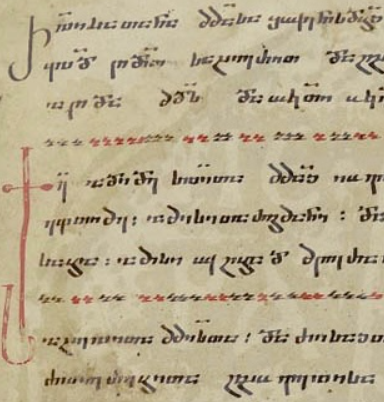
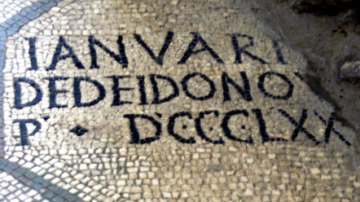
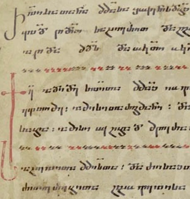

Europe
Home
 Linear B inscription on a clay tablet

Latin mosaic at the Basilica of Aquileia

Georgian manuscript in the Nuskhuri script
Linear B inscription on a clay tablet

Latin mosaic at the Basilica of Aquileia

Georgian manuscript in the Nuskhuri script
European alphabets
- Armenian
- Cyrillic
- Georgian
- Glagolitic
- Greek
- Latin
- Old Italic
European semisyllabaries
European syllabaries
- Cypriot syllabary
- Linear B
Other European scripts
- Arkalochiri axe
- Cretan hieroglyphs
- Dispilio tablet
- Linear A
- Phaistos disk
- Tărtăria tablets
- Vinča script